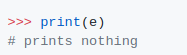
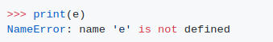
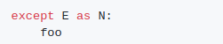
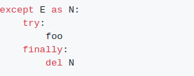
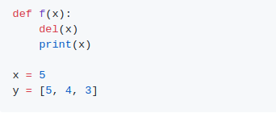
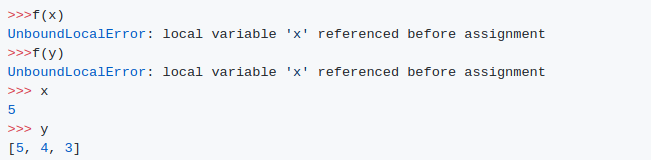
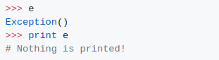

Output (Python 2.x):
Output (Python 3.x):
설명:
출처: https://docs.python.org/3/reference/compound_stmts.html#except
예외를 대상으로 지정한 경우 제외 조항의 끝에 삭제됩니다. 마치

가 아래와 같이 바뀌는 것과 같습니다

이것은 예외 조항 뒤에 언급할 수 있도록 예외를 다른 이름에 할당해야 한다는 것을 의미합니다.예외 사항은 추적이 부착된 상태에서 스택 프레임과 함께 기준 사이클을 형성하여 다음 쓰레기 수집이 발생할 때까지 해당 프레임의 모든 지역 변수들을 생존 상태로 유지하기 때문에 삭제됩니다.
그 조항들은 파이썬으로 범위가 정해져 있지 않습니다. 예시의 모든 것이 동일한 범위에 있으며, 예외 조항의 실행으로 변수 e가 제거되었습니다.별도의 내부 범위를 갖는 기능이 있는 경우는 동일하지 않습니다.아래의 예는 다음과 같습니다.

Output

Python 2.x에서 변수 이름 e는 예외() 인스턴스에 할당되므로, 인쇄를 시도할 때 아무 것도 인쇄하지 않습니다.
Output (Python 2.x):
